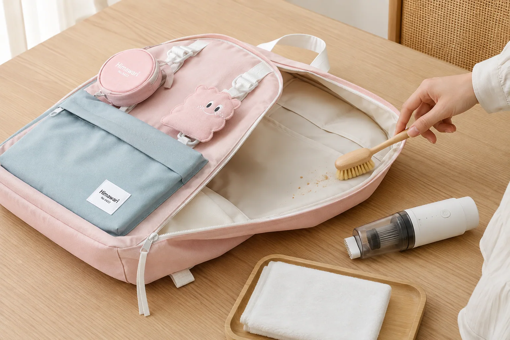

백팩 안감 청소법: 먼지·부스러기를 안전하게 비우는 6단계

백팩 안쪽에는 종이 조각, 과자 부스러기, 먼지와 보풀이 생각보다 빠르게 모입니다. 겉면은 자주 닦아도 주머니 바닥과 봉제선은 놓치기 쉽습니다. 제품별 관리 안내를 먼저 확인하고, 마른 먼지부터 제거한 다음 필요한 곳만 최소한으로 관리하는 순서를 권합니다.
1. 관리 라벨과 안감 소재를 먼저 확인하세요
세탁 가능 여부, 사용하면 안 되는 세제와 건조 방법은 제품마다 다릅니다. 안쪽 라벨과 제품 상세 설명을 확인하고, 코팅이나 보강재가 있는 가방은 물에 오래 담그지 않습니다. 확인이 어려우면 판매자에게 문의한 뒤 진행하세요.
2. 모든 주머니를 열고 완전히 비우세요
큰 수납칸뿐 아니라 앞주머니, 안쪽 지퍼칸과 작은 슬립 포켓까지 손전등으로 살핍니다. 카드, 클립과 동전은 청소기에 빨려 들어갈 수 있으므로 먼저 손으로 꺼냅니다. 탈착 가능한 파우치와 바닥판은 제품 구조를 확인한 뒤 따로 둡니다.
3. 마른 부스러기부터 바깥으로 모으세요
가방 입구를 아래로 향하게 하고 무리하게 뒤집지 않은 채 가볍게 흔듭니다. 부드러운 솔로 봉제선에서 입구 방향으로 쓸어 먼지를 모으고, 소형 청소기를 쓴다면 가장 약한 흡입으로 천이 빨려 들지 않게 거리를 둡니다. 날카로운 노즐은 안감에 직접 대지 않습니다.
4. 작은 얼룩은 보이지 않는 곳에서 시험하세요
제품 안내에서 허용하는 경우에만 물을 아주 조금 묻힌 밝은색 천으로 안쪽 구석을 먼저 시험합니다. 색이 묻어나거나 표면이 변하면 즉시 멈춥니다. 얼룩을 세게 비비면 범위가 넓어지거나 보풀이 생길 수 있으므로 바깥에서 안쪽으로 가볍게 눌러 닦습니다.
겉면의 오염을 함께 정리하려면 소재와 코팅을 구분해야 합니다. 백팩 소재별 표면 관리법을 먼저 참고하세요.
5. 지퍼와 모서리까지 점검하세요
먼지가 자주 남는 안쪽 모서리와 지퍼 끝부분을 다시 확인합니다. 지퍼 레일에 부스러기가 끼었다면 마른 솔로 털고 억지로 여닫지 않습니다. 부자재 점검 순서는 지퍼·버클 관리법에서 이어서 확인할 수 있습니다.
6. 입구를 열어 완전히 말리세요
수분을 조금이라도 사용했다면 모든 주머니와 지퍼를 열고 통풍이 되는 그늘에 둡니다. 뜨거운 바람, 난방기와 강한 직사광선은 소재 변형이나 변색의 원인이 될 수 있습니다. 손으로 만졌을 때 봉제선 안쪽까지 마른 뒤 소지품을 다시 넣으세요.
매주 5분 내부 관리 체크리스트
- 영수증과 종이 조각을 모두 꺼냈나요?
- 주머니 바닥과 봉제선의 부스러기를 제거했나요?
- 물병이나 화장품 누수 흔적이 없나요?
- 지퍼 주변에 실밥이나 먼지가 걸리지 않았나요?
- 완전히 마른 다음 짐을 다시 넣었나요?
작은 청소를 자주 하면 한 번에 강한 세척을 해야 할 상황을 줄일 수 있습니다. 청소 후에는 필요한 물건만 골라 담는 매일 백팩 정리 루틴으로 이어가 보세요.
참고·안내
- Himawari 제품별 소재와 상세 정보
- 대표 이미지는 Himawari No.0422 제품을 바탕으로 만든 관리 장면입니다. 실제 세척은 각 제품의 관리 라벨과 판매자 안내를 우선해 주세요.
자주 묻는 질문
백팩을 통째로 세탁해도 되나요?
제품마다 소재와 부자재가 다르므로 관리 라벨과 판매자의 안내를 우선해야 합니다. 안내가 없다면 통세탁보다 마른 먼지 제거와 국소적인 관리부터 시작하세요.
가방 안 부스러기는 어떻게 빼나요?
모든 소지품과 탈착 부품을 꺼낸 뒤 입구를 아래로 향해 가볍게 털고, 솔이나 약한 흡입의 소형 청소기로 모서리를 정리하세요.
청소 후 바로 짐을 넣어도 되나요?
수분을 사용했다면 안감과 봉제선이 완전히 마른 뒤 넣어야 합니다. 입구와 주머니를 열어 통풍이 되는 그늘에서 충분히 말리세요.